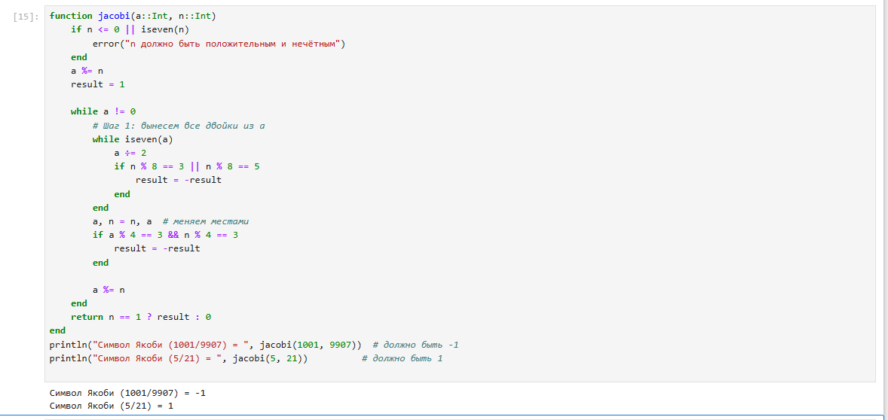

title: "Математические основы защиты информации и информационной безопасности" subtitle: "Отчёт по лабораторной работе №5:Вероятностные алгоритмы проверки чисел на простоту" author: "Бекбузарова Роза"
lang: ru-RU toc-title: "Содержание"
bibliography: bib/cite.bib csl: pandoc/csl/gost-r-7-0-5-2008-numeric.csl
toc: true # Table of contents toc-depth: 2 lof: true # List of figures lot: true # List of tables fontsize: 12pt linestretch: 1.5 papersize: a4 documentclass: scrreprt
polyglossia-lang: name: russian options: - spelling=modern - babelshorthands=true polyglossia-otherlangs: name: english
babel-lang: russian babel-otherlangs: english
mainfont: PT Serif romanfont: PT Serif sansfont: PT Sans monofont: PT Mono mainfontoptions: Ligatures=TeX romanfontoptions: Ligatures=TeX sansfontoptions: Ligatures=TeX,Scale=MatchLowercase monofontoptions: Scale=MatchLowercase,Scale=0.9
biblatex: true biblio-style: "gost-numeric" biblatexoptions:
figureTitle: "Рис." tableTitle: "Таблица" listingTitle: "Листинг" lolTitle: "Листинги"
indent: true header-includes:
Основной целью работы является реализовать разными алгоритмами проверки чисел на простоту



В ходе выполнения лабораторной работы было реализовано разными алгоритмами проверка чисел на простоту.